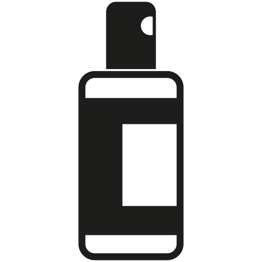

Małe
Małe
 Powlony
Powlony
 Małe
Małe
| Day | |||||||
|---|---|---|---|---|---|---|---|
 | |||||||
|  |
Jest to roślina dla zapominalski, wymaga bardzo rzadkiego podlewania dopiero wtedy gdy podłoże jest widocznie suche. Posida zdolnośći oczyszczające powietrze. Lubi stanowiska jasne lub pół ciemne. Lepiej ją przesuszyć niż zalać.